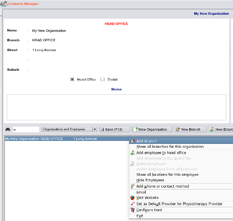

|  |
- The purpose of having branches in the contacts database is to allow you
to organise your information in a logical manner.
- We would traditionally think of branches of an organisation as having a different geographical location
to the main head office and this is usually the case.
- However, within EasyGP, The term 'branch' is slightly different and could be anything from a department within the same building as the head office
to an actual branch office located at a different geographical location.
- As an example it will allow you to have
a listing of a public hospital, all of its departments - or locations of its branches,
and all employees in each of these departments - even if one employee works in multiple locations,
together with their contact information, occupation and interests.
|